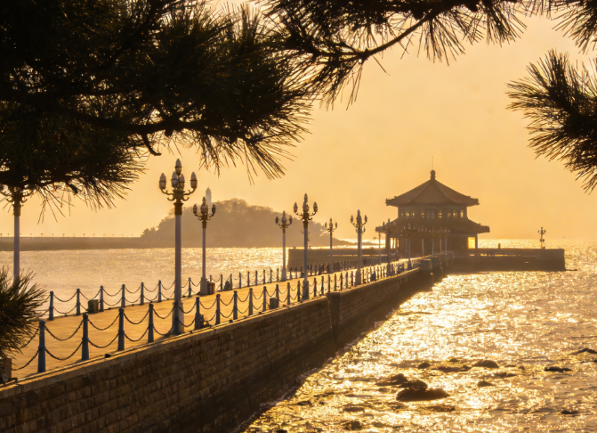
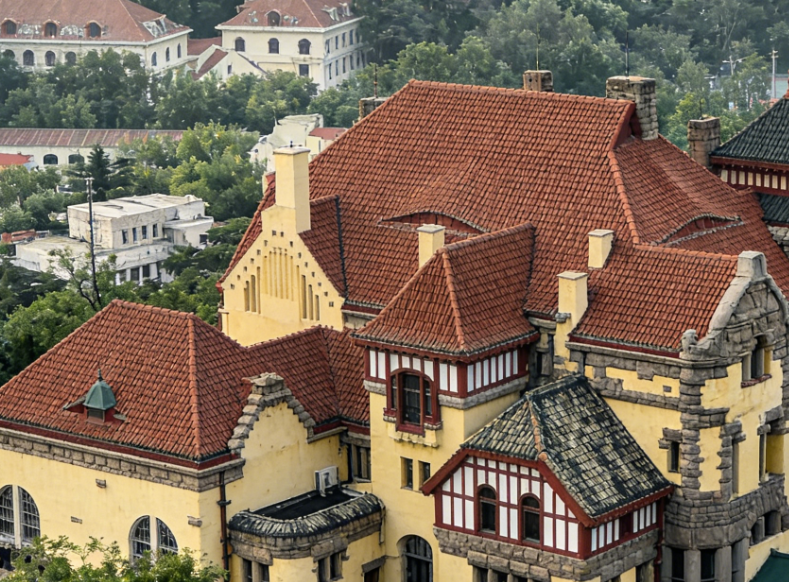
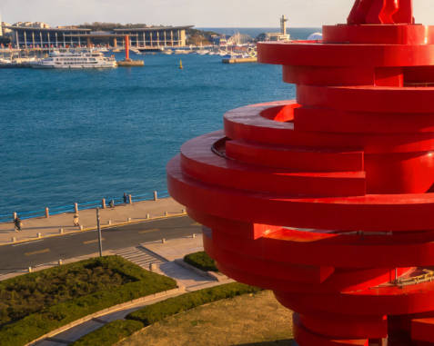
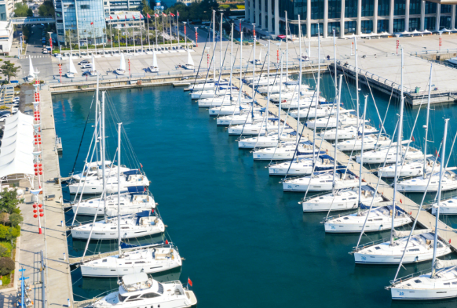

Zhanqiao Pier
The symbol of Qingdao, this iconic pier extends 440 meters into the sea, with the Huilan Pavilion standing gracefully at its tip. Built in 1892, it has witnessed over a century of maritime history.

Badaguan
Known as the "Architecture Museum," Badaguan features over 200 European-style villas surrounded by tree-lined avenues with different flowers on each road.
Mount Lao (Laoshan)
Rising 1,133 meters above sea level, Mount Lao is one of China's most important Taoist mountains, offering breathtaking panoramic views of the East China Sea.
Golden Sand Beach
Stretching over 3,500 meters, Golden Sand Beach is the largest beach in northern China with fine golden sand and gentle waves perfect for summer activities.

May Fourth Square
The heart of modern Qingdao, featuring the striking "May Wind" sculpture in brilliant red, overlooking the Olympic Sailing Center and the bay.

Olympic Sailing Center
Built for the 2008 Beijing Olympics sailing competitions, this world-class facility showcases Qingdao's proud identity as China's "City of Sailing."